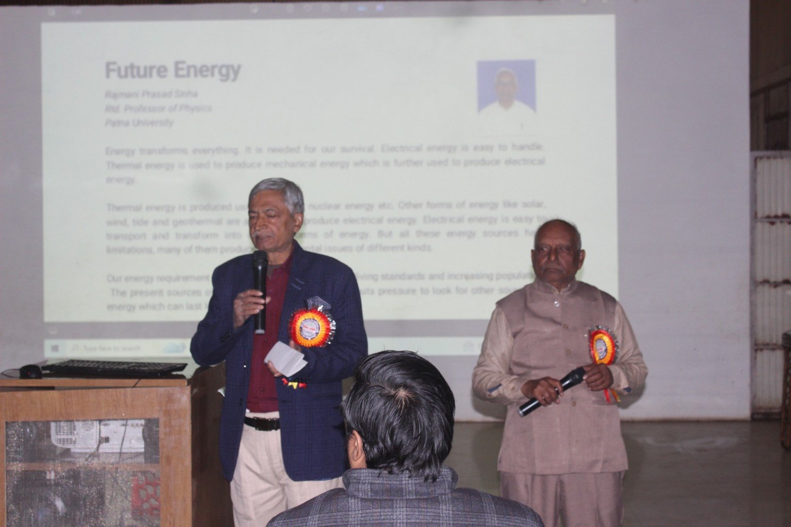
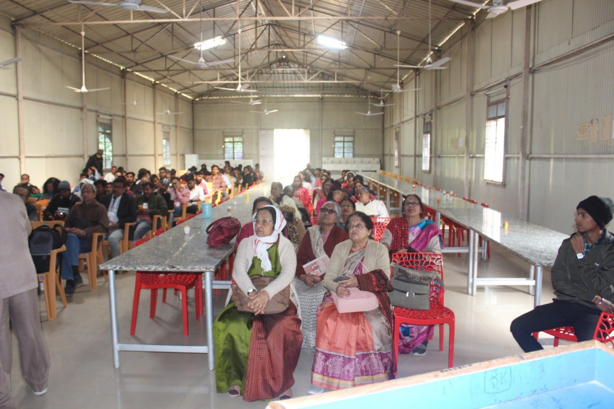
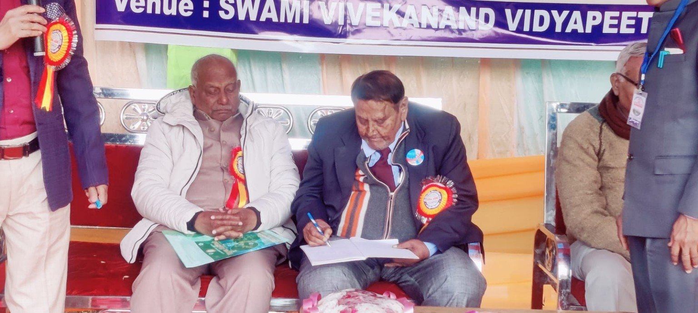
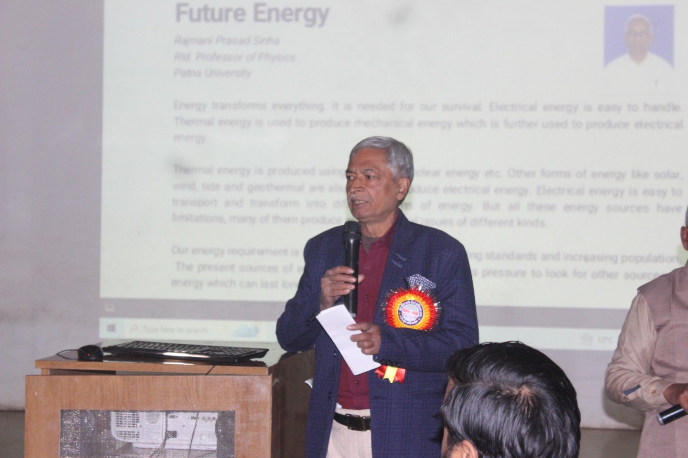
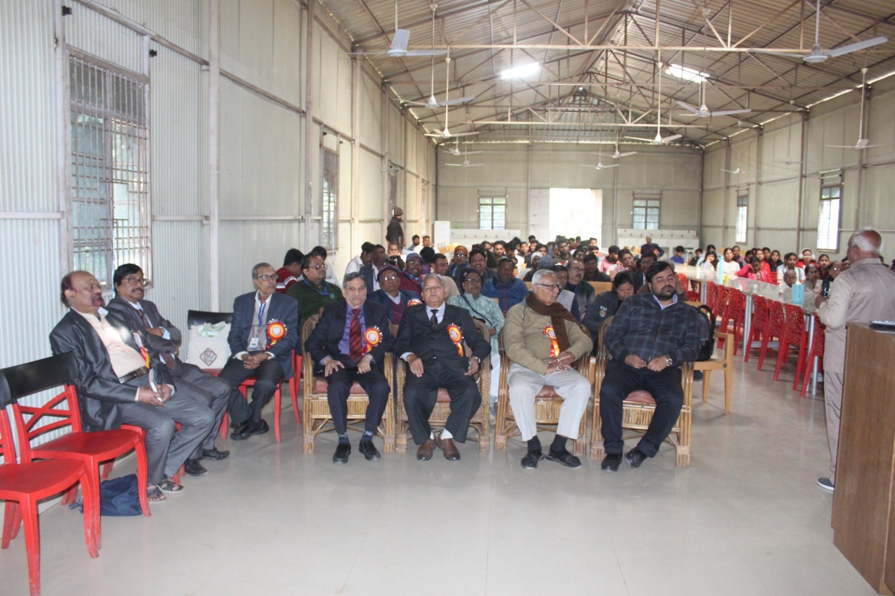
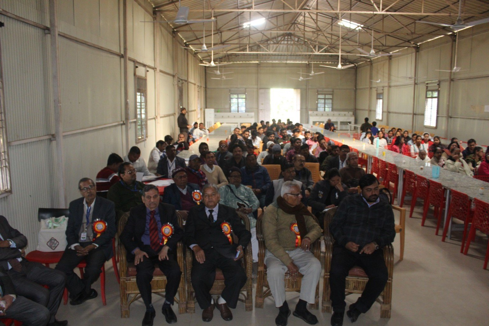

⚗
Capacity Building
Help science teachers enhance their competencies through refresher and orientation programmes and professional development.
The Association of Science Teachers carries forward the legacy of AISTA to strengthen science education, build the professional capacity of teachers and encourage innovation in science teaching.
The Association of Science Teachers is the present registered name of the organisation, adopted for administrative reasons in continuation of AISTA (All India Science Teachers' Association), established in 1956.
The association originated from the All India Seminar on the Teaching of Science in Secondary Schools held at Taradevi, Himachal Pradesh, in June 1956. The first annual conference was held at Gwalior in December 1956, beginning a long tradition of annual scientific and educational exchange.
Our central focus is capacity building of science teachers and innovation in science teaching, while promoting research, scientific temper, inquiry, humanism and science-based social transformation.
Help science teachers enhance their competencies through refresher and orientation programmes and professional development.
Advance and promote effective teaching and learning of science, especially at school level.
Foster research in science teaching methods, curriculum and science education and provide a common professional forum.
Promote scientific method and attitude, inquiry, humanism and awareness against superstition.
Proposal for a permanent All India Science Teachers' Association emerged at the Taradevi seminar on science teaching.
First annual conference held at Gwalior in December.
Asian Regional Seminar on Integrated Environmental Science held in New Delhi in cooperation with UNESCO and ICASE.
Papers presented to an Asian Regional Seminar on low-cost science equipment in the Philippines and an out-of-school science activities seminar in Singapore.
Asian Symposium on Biology Education organised in cooperation with ICASE, UNESCO and AABE.
Forty-first conference at Nagpur marked the Golden Jubilee Conference.
Forty-ninth annual conference recorded at B.H.U., Varanasi.
The Association of Science Teachers continues the legacy of AISTA, with active branches across multiple states and a renewed focus on digital connectivity.
Our branches are active in Bihar, West Bengal, Maharashtra, Delhi, Uttar Pradesh, Uttarakhand, Jharkhand and other parts of India.
The Association has held annual conferences in different parts of India. Selected milestones from the supplied conference record are shown below.
First Annual Conference
Tenth Annual Conference
Twenty-third Conference
Golden Jubilee Conference
Forty-sixth Conference
Forty-ninth Conference
Annual conferences, special conferences, lectures, demonstrations and memorial lectures.
Workshops, study groups, seminars, symposia and study circles for professional learning.
Science quizzes, fairs, exhibitions, aptitude and talent tests through branches.
Experiments, teaching aids, science films and other resources related to scientific topics.
Research in science education and publication of Vigyan Shikshak and other educational material.
Historic cooperation and participation with organisations including UNESCO, ICASE and AABE.






As described in the supplied rules and regulations, an Indian citizen aged 18 years or above who is interested in the work of the Society and agrees to its rules may apply for membership.
Online submission is currently an expression of interest. The official membership process will be connected after the Association provides the final digital workflow and payment details.
Registered Office:
34, Betia House Road, BNR Training College Road,
Chowdhury Tola, Patna – 800006, Bihar
Official Email: xyz@gmail.com (temporary — to be updated)
Official Phone: 999999999 (temporary — to be updated)
Area of Operation: All over India
The present registered name reflects the Association's administrative update while preserving the history, traditions, objectives and scientific-education mission built since 1956.